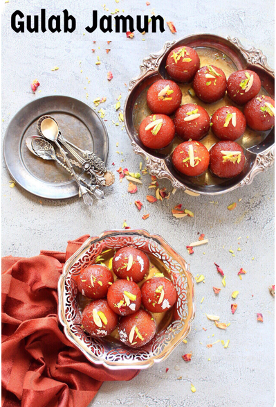

Gulab Jamun

Preparation Time🕒:
40-50 minutes
Serving Size🥣:
12 pieces
Show Ingredients📖
Ingredients:
1 cup Milk Powder
1/4 cup All-Purpose Flour
1/4 tsp Baking Soda
2 tbsp Ghee (Clarified Butter)
Warm Milk, as needed
Sugar Syrup (2 cups sugar + 2 cups water)
1 tsp Cardamom Powder
Oil for deep frying
Show Steps📝
Steps:
Mix milk powder, flour, and baking soda. Add ghee and mix well.
Gradually add warm milk to form a smooth dough.
Shape dough into small balls.
Deep fry the balls on low heat until golden brown.
Prepare sugar syrup by boiling sugar and water. Add cardamom powder.
Soak fried balls in warm sugar syrup for 30 minutes.
Start Cooking
Next
Remaining Time🕒:
60:00
Print Recipe